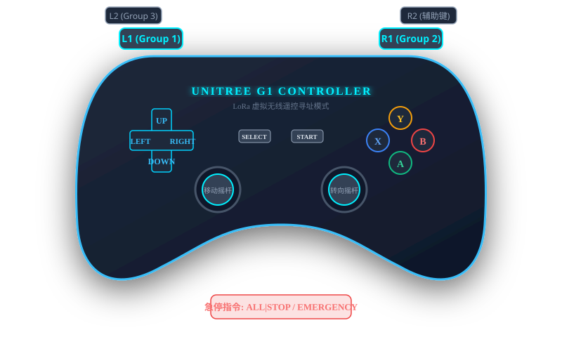

📡 局域网设备并发扫描
支持全网段快速发现宇树 G1 / Go2 及
SSH 端口活跃主机（192.168.123.1~254）
点击【开始扫描】发现局域网设备
🌐 Windows 本机网卡直连配置
通过一键调用 Windows netsh 接口，将选中的以太网适配器配置为与机器人相同的 192.168.123.x 网段。
🔌 Windows 本机 LoRa 串口驱动 (CH340/CH341)
上位机若插有 USB LoRa 广播发射器（用于向机器人发送群控动作与控制指令），本机需安装 Windows CH341 串口驱动。
正在检测 Windows 本机串口状态...
🛠️ 机器人运行环境深度预检
点击【刷新预检】开始检测环境
📤 镜像上传
未选择文件
⚡ Docker Load 与 Load 输出
等待执行 docker load ...
🚀 启动固化参数容器
参数已固化
--restart=on-failure --name vsis_g1 --gpus all --privileged
--device /dev/:/dev/ -p 400:22 -p 4001:4000 -p 4002:6006
--device /dev/:/dev/ -p 400:22 -p 4001:4000 -p 4002:6006
点击上方按钮启动容器...
⚙️ 开机自启与 Robot ID
写入
/home/ubuntu/vsis_mimic_deploy/group/lora_robot_id.txt，每台机器人必须唯一！
🔑 64 位硬件机器码（Machine ID）
尚未读取，请点击下方按钮
📄 License 授权导入
license.json
点击选择或将 license.json 拖拽至此处
上传后自动写入并重启机器人主控进行生效校验
🔍 授权与校验结果
请在左侧拖入或选择 license.json 文件
💃 导入新舞蹈动作包 (.vsis + license)
全程无需手动改配置
💡 商业化更新说明：
1. 自动上传
2. 自动在
3. 重启控制进程无需重新编译即可生效。
4. 触发命令格式：
1. 自动上传
.vsis 覆盖 /secure/config_vsis/mimic_exp2。2. 自动在
lora_recv_group.yaml 的 dance_map 中添加映射。3. 重启控制进程无需重新编译即可生效。
4. 触发命令格式：
ALL|DANCE,别名
📋 部署结果
等待部署操作...
正在拉取日志...
💻 远程控制台输出
点击左侧命令的【⚡ 执行】或在下方输入自定义命令...
🎮 宇树物理遥控器按键图解

📋 现场操作顺序与命令表
标准动作执行顺序： 站立 (STAND) ➔ 等待3秒 ➔ 步态 (GAIT) ➔ 舞蹈 (DANCE) ➔ 软停/急停
| 命令字 | 按键映射 | 功能说明 |
|---|---|---|
| ALL|STAND | L1+START | 进入 FixStand 固定站立状态 |
| ALL|GAIT | R1+START | 进入 RL_MJAMP 步态（可移动） |
| ALL|DANCE,G1_TIKTOK | L1+UP | 播放抖音摇摆舞 (Group 1) |
| ALL|DANCE,G1_TURN_JUMP | L1+DOWN | 播放旋转跳跃舞 |
| ALL|DANCE,G2_WAVE | R1+UP | 播放机械手臂波浪舞 (Group 2) |
| ALL|STOP | B 键 | 软停：减速归零，保持站立 |
| ALL|EMERGENCY | L2+R2+B | 硬停：立即零轴取消所有控制 |